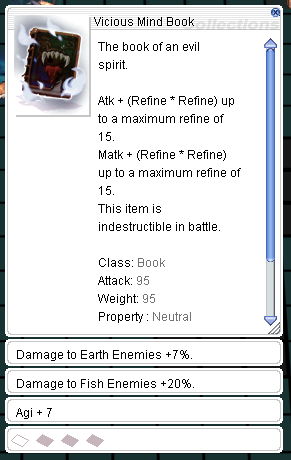
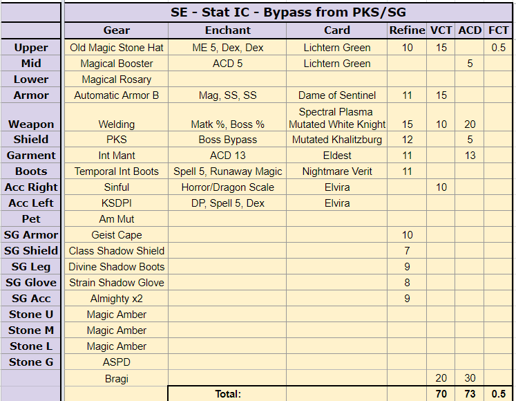

File list
Jump to navigation
Jump to search
This special page shows all uploaded files.
{kind=link}
{kind=link}
| Date | Name | Thumbnail | Size | User | Description | Versions |
|---|---|---|---|---|---|---|
| 19:22, 23 May 2016 | Verus 018.png (file) |  |
57 KB | Tokeiburu | 1 | |
| 19:26, 23 May 2016 | Verus 019.png (file) |  |
68 KB | Tokeiburu | 1 | |
| 15:23, 23 May 2016 | Verus 02.png (file) |  |
44 KB | Tokeiburu | 1 | |
| 19:32, 23 May 2016 | Verus 020.png (file) | 72 KB | Tokeiburu | 1 | ||
| 19:35, 23 May 2016 | Verus 021.png (file) |  |
59 KB | Tokeiburu | 1 | |
| 19:39, 23 May 2016 | Verus 022.png (file) |  |
70 KB | Tokeiburu | 1 | |
| 19:49, 23 May 2016 | Verus 023.png (file) |  |
76 KB | Tokeiburu | 1 | |
| 19:49, 23 May 2016 | Verus 024.png (file) | 77 KB | Tokeiburu | 1 | ||
| 15:25, 23 May 2016 | Verus 03.png (file) |  |
45 KB | Tokeiburu | 1 | |
| 16:40, 27 August 2016 | Verus 030.png (file) | 383 KB | Tokeiburu | 1 | ||
| 16:43, 27 August 2016 | Verus 031.png (file) |  |
383 KB | Tokeiburu | 1 | |
| 15:41, 9 June 2017 | Vicious.png (file) |  | 23 KB | Halves | 1 | |
| 17:41, 15 July 2018 | Vicious mind book.png (file) | 681 bytes | Colours | 1 | ||
| 22:44, 18 March 2023 | Villa of deception.png (file) |  |
58 KB | Yorutia | 1 | |
| 21:01, 18 March 2023 | Villa of deception overview.png (file) |  |
475 KB | Yorutia | 1 | |
| 06:27, 19 April 2022 | ViolentQuake.png (file) | 1,015 bytes | Miyu | 1 | ||
| 23:24, 24 November 2015 | VioletDyestuffs.gif (file) |  |
294 bytes | Lai | 1 | |
| 06:40, 26 October 2020 | ViolyPet.png (file) | 2 KB | Randomced859 | 1 | ||
| 14:07, 13 February 2016 | Visualcheat.png (file) | 73 KB | Adri | 1 | ||
| 00:35, 2 April 2021 | VitataPet.png (file) | 611 bytes | Randomced859 | 1 | ||
| 13:52, 2 February 2016 | Vitglove.png (file) | 10 KB | Adri | 1 | ||
| 16:33, 7 May 2017 | Vocal.gif (file) | 38 KB | Halves | 1 | ||
| 19:41, 20 August 2016 | Voice Lessons.png (file) |  |
3 KB | Kuno | 1 | |
| 01:35, 17 September 2015 | Volash.png (file) | 3 KB | AloeLeaflet | 1 | ||
| 13:26, 5 October 2016 | Volcano.png (file) |  |
1 KB | Seandh | 1 | |
| 21:28, 22 June 2016 | Voltz.jpg (file) |  |
124 KB | Mayo | 1 | |
| 06:27, 19 April 2022 | VulcanSoulStrike.png (file) | 997 bytes | Miyu | 1 | ||
| 11:14, 16 October 2016 | Vulcan Arm.png (file) |  |
481 bytes | RadenWA | 1 | |
| 06:45, 30 September 2016 | Vulture's Eye.png (file) |  |
399 bytes | Cyphers | 1 | |
| 06:30, 19 April 2022 | WARLOCK.gif (file) |  |
25 KB | Miyu | 1 | |
| 15:22, 18 January 2023 | WH.png (file) |  |
680 bytes | Hurt Locker | 1 | |
| 19:39, 27 May 2019 | WIND GHOST.gif (file) |  |
17 KB | Seandh | Wind Ghost mob. | 1 |
| 06:30, 19 April 2022 | WIZARD.gif (file) | 20 KB | Miyu | 1 | ||
| 22:46, 9 September 2018 | WLCR.png (file) |  |
52 KB | I Know To Write | Instance picture of Werner's Laboratory: Central Room | 1 |
| 11:22, 15 December 2016 | WLPose1.png (file) |  |
11 KB | Halves | 1 | |
| 01:42, 27 June 2022 | WL Spreadsheet Haise1.png (file) | 155 KB | HairyWizard | 1 | ||
| 01:46, 27 June 2022 | WL Spreadsheet Haise2.png (file) |  |
78 KB | HairyWizard | 1 | |
| 03:13, 27 June 2022 | WL Spreadsheet Loomus1.png (file) |  | 49 KB | HairyWizard | 1 | |
| 01:42, 27 June 2022 | WL Spreadsheet Rocha1.png (file) | 32 KB | HairyWizard | 1 | ||
| 20:30, 27 May 2019 | WRAITH DEAD.gif (file) |  |
21 KB | Seandh | 1 | |
| 08:54, 4 September 2015 | WShopCatalog.jpg (file) | 121 KB | Renata | 1 | ||
| 14:23, 18 September 2020 | WTHJH.jpg (file) | 23 KB | G00suede | 1 | ||
| 17:26, 8 July 2016 | WW Build 1.png (file) |  |
15 KB | Deegs | 1 | |
| 02:36, 23 September 2015 | Wa moonlit serenade.gif (file) |  |
1,013 bytes | Brownie | 1 | |
| 02:36, 23 September 2015 | Wa swing dance.gif (file) |  |
1 KB | Brownie | 1 | |
| 02:36, 23 September 2015 | Wa symphony of lover.gif (file) | 1 KB | Brownie | 1 | ||
| 06:28, 26 October 2020 | WakwakPet.png (file) |  |
3 KB | Randomced859 | 1 | |
| 13:26, 5 October 2016 | Wall of fog.png (file) |  |
1 KB | Seandh | 1 | |
| 21:51, 17 November 2015 | WallofThorns.png (file) |  |
988 bytes | Adri | 1 | |
| 02:41, 27 October 2019 | WandererPetWindow.jpg (file) |  |
7 KB | Randomced859 | 1 |
{kind=link}
{kind=link}
{kind=link}
{kind=link}
{kind=link}
{kind=link}
{kind=link}
{kind=link}
{kind=link}
{kind=link}